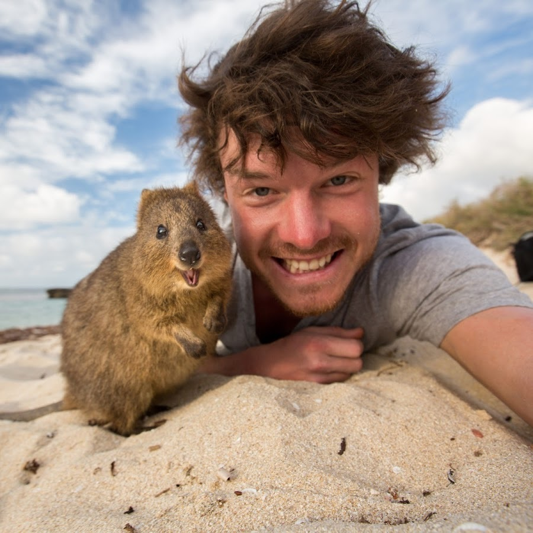

Clientes Destacados
Allan Dixon
El fotógrafo que recorre el mundo tomándose asombrosas selfies con animales. Apodado como el Doctor Dolittle de la vida real, el irlandes asegura que lograr una buena fotografia con animales es sencillo. "Solo tienes que relajarte y hacer click", dice.